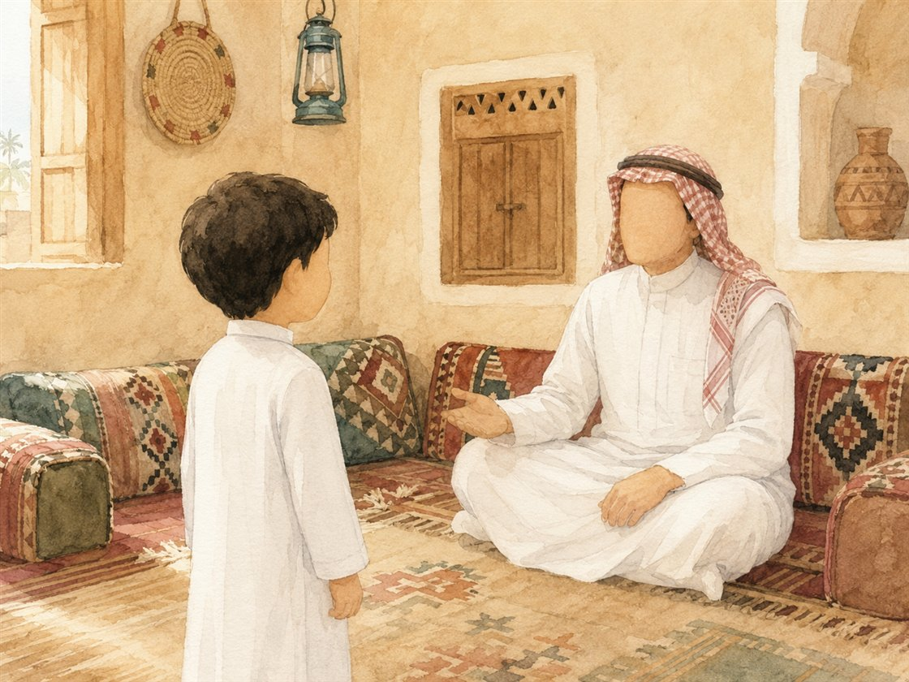
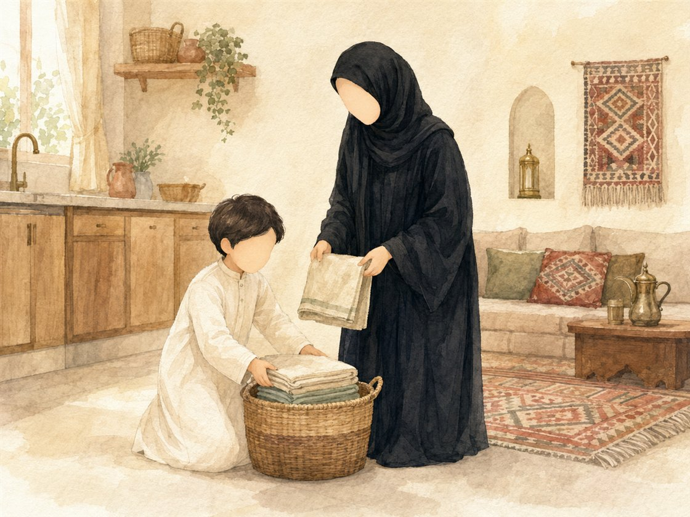
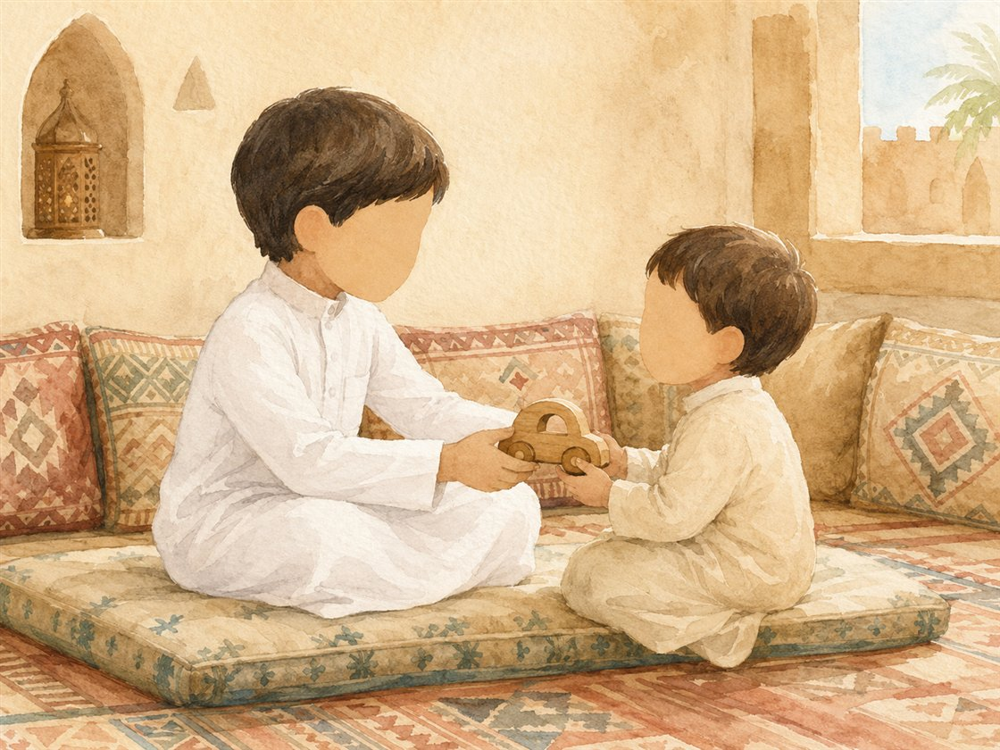
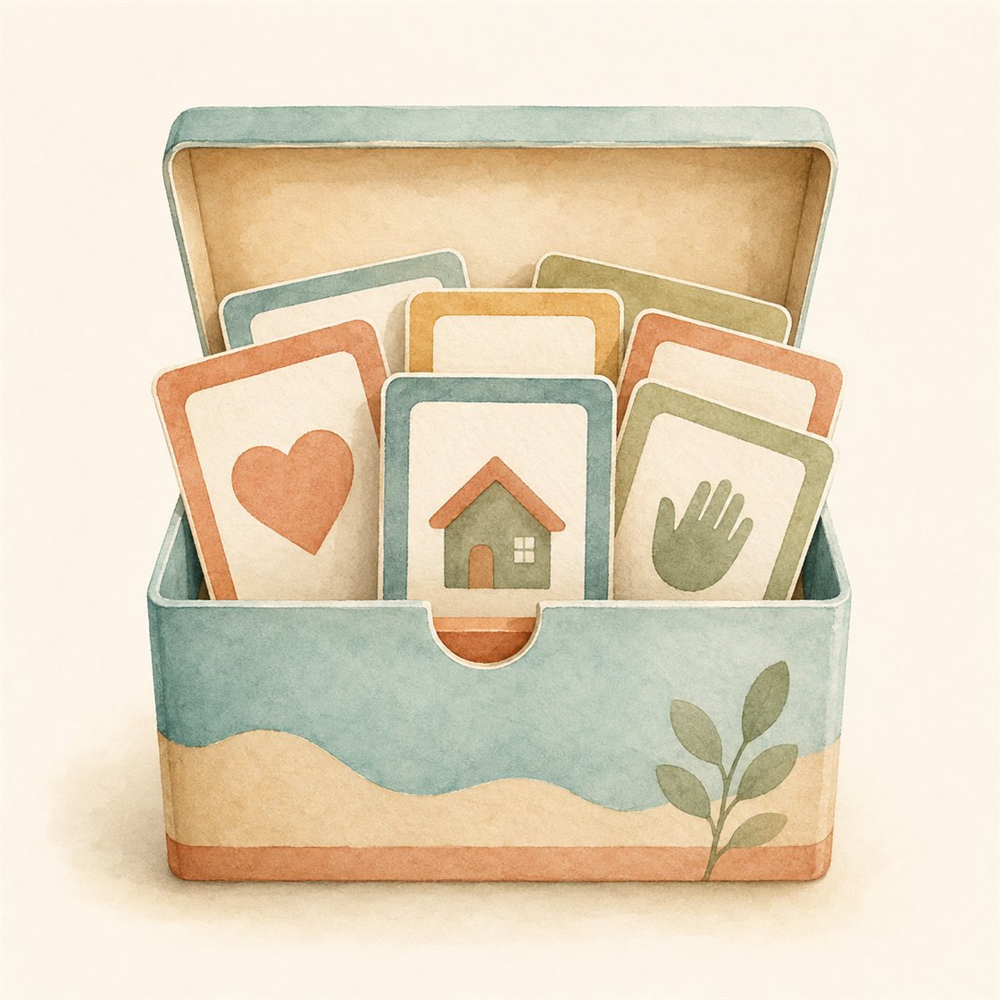

بسم الله الرحمن الرحيم، السلام عليكم ورحمة الله وبركاته… أهلًا وسهلًا بكم في يوم جديد ولقاء جديد. نستمع الآن إلى إشارة بدء اللقاء لنعرف ماذا سيكون لقاؤنا.
الإشارة الثابتة: تُشغّل المعلمة أنشودة العلم هو النور الهادي علامةً ثابتةً لبدء لقاء علّمني ربي (لا تُسمّي المعلمة اللقاء)؛ فيتهيّأ الأطفال للجلوس والإنصات، ويتعرّفون بأنفسهم على اللقاء من إشارته.
🎬 فيديو إشارة بدء لقاء علّمني ربي — تستعين به المعلمة لضبط نغمة الإشارة (نفس إشارة المادة في جميع الوحدات).
بعد الإشارة: يتعرّف الأطفال بأنفسهم على اللقاء، ثم تؤكّد المعلمة: «نعم، لقاؤنا الآن لقاء علّمني ربي».
📜 قوانين الفصل
🌿 أحافظ على نظافة فصليإماطة الأذى عن الطريق صدقة.
👂 أستمع وأنصتفلا أقاطع الآخرين.
🤲 أحفظ لساني ويديالمسلم من سلم المسلمون من لسانه ويده.
🪑 أجلس جلسة صحيحةفي المساحة المخصصة لي.
✋ أرفع يدي للمشاركةالسؤال للجميع والإجابة لمن تختاره المعلمة.
↺ مراجعة سريعة وربط بالسابق
تُذكّر المعلمة الأطفال بعنوان الوحدة «وحدة العائلة»، وتراجع معهم ما تعلّموه في درس مفهوم العائلة عن نعمة العائلة، ثم تسأل: «ما واجبنا تجاه أفراد عائلتنا؟ كيف أتعامل مع أبي وأمي وإخوتي؟» تمهيدًا لآداب التعامل مع الأهل.
📋 ورقة التدريس السريعة — خطوات اللقاء أثناء الدرس
① تهيئة وبداية اللقاء ٨ د
إشارة بدء اللقاء: أنشودة «العلم هو النور الهادي»، ويتعرّف الأطفال على اللقاء بأنفسهم.
تذكير الأطفال بقوانين الفصل الخمسة.
مراجعة سريعة لدرس «مفهوم العائلة» والتمهيد: ما واجبنا تجاه أفراد عائلتنا؟
② بناء وسير اللقاء ١٤ د
صندوق البطاقات الملوّنة (بطاقات الآداب).
الآداب الأربعة: احترام · جلوس بأدب · مساعدة الوالدين · رحمة بالإخوة.
المعنى المركزي + تصحيح فهم الطفل + الجملة الختامية.
③ إغلاق وتقويم ٨ د
النشاط المصاحب: اختيار بطاقة الأدب وتمثيل موقف أسري.
أسئلة التغذية الراجعة.
دعاء كفارة المجلس وختام اللقاء.
🏠 ربط الأسرة: يطبّق الطفل أدبًا واحدًا مع أهله في البيت (احترام · مساعدة · مشاركة)، ويخبر أسرته: «خيركم خيركم لأهله».
ورقةٌ مرجعية سريعة أثناء الدرس — الخطوات فقط دون الأهداف والزيادات؛ والنصّ الكامل في تبويب «دليل الدرس كامل».
☀
سير اللقاء
التمهيد والربط: ترحّب المعلمة بالأطفال، وتراجع معهم درس «مفهوم العائلة»، ثم تسأل: «ما واجبنا تجاه أفراد عائلتنا؟ كيف أتعامل مع أبي وأمي وإخوتي؟»
صندوق البطاقات: تُخرج المعلمة صندوق البطاقات الملوّنة وتقول: «في هذا الصندوق آداب جميلة… كل طفل سيختار بطاقة، وسنقرأ الأدب معًا».
الأدب الأول — احترام أفراد العائلة: «أحترم ماما فلا أرفع صوتي عليها… أحترم بابا فأسمع كلامه… أحترم أختي فلا أتنازع معها على الألعاب… أحترم أخي فلا أؤذيه». ثم تسأل: كيف تحترم ماما؟ كيف تحترم أختك؟

🖼️ صورة تعرضها المعلمة: احترام أفراد العائلة
الأدب الثاني — الجلوس بأدب وهدوء: «عندما تريد ماما أن ترتاح لا أزعجها… وعندما تريد أختي اللعب معي ألعب معها بلطف».
الأدب الثالث — مساعدة الوالدين: «أساعد ماما في ترتيب الألعاب… أساعد بابا في إحضار الأشياء… الله يحب من يساعد أهله».

🖼️ صورة تعرضها المعلمة: مساعدة الوالدين
الأدب الرابع — الرحمة بالإخوة: «أساعد أخي الصغير… أشارك أختي… لا أصرخ… لا أضرب… لا أؤذي».

🖼️ صورة تعرضها المعلمة: الرحمة بالإخوة والمشاركة
💡 المعنى المركزي: التعامل الحسن مع أفراد الأسرة عبادة يحبها الله؛ فنحترم الوالدين والكبار، ونساعد ماما وبابا، ونرحم الإخوة الصغار، ونتلطّف في القول والفعل — فخيركم خيركم لأهله.
❓ تصحيح فهم الطفل: حسن التعامل ليس كلماتٍ نحفظها فحسب، بل سلوكٌ نعيشه مع أهلنا كل يوم؛ فلا يكفي أن أقول «أحترم أمي» حتى أطبّق ذلك فعلًا. وليس الأدب مع الغرباء فقط؛ بل أَولى الناس بحسن تعاملنا وبرّنا أهلُ بيتنا.
الجملة الختامية: «حسن التعامل مع أهلي أدبٌ يحبّه الله؛ خيركم خيركم لأهله» — يردّدها الأطفال.
تطلب المعلمة من الأطفال تمثيل مواقف قصيرة من حياة الأسرة، وتعزّز السلوك الصحيح بعد كل موقف:
• طفل يساعد أمه في ترتيب الألعاب. • طفل يحترم والده ويسمع كلامه. • طفل يشارك أخته لعبتها بلطف. • طفل يجلس بهدوء ولا يزعج من حوله.
ثم تقول المعلمة: «أحسنتم! هكذا نتعامل مع أهلنا بأدب وحسن خلق، والله يحب المحسنين».
🖼️
الوسائل والصور المعروضة في اللقاء
احترام أفراد العائلةتُعرض عند الأدب الأول
مساعدة الوالدينتُعرض عند الأدب الثالث
الرحمة بالإخوة والمشاركةتُعرض عند الأدب الرابع

صندوق بطاقات الآدابيختار منه الطفل بطاقة
✓
الإغلاق — التغذية الراجعة
؟ أسئلة التغذية الراجعة (مع الإجابات النموذجية)
كيف تتعامل مع الكبير والصغير داخل العائلة؟أحترم الكبير وأوقّره وأخفض صوتي عنده، وأرحم الصغير وألاطفه وأشاركه؛ لأن حسن التعامل يحبّه الله.
اذكر أدبًا واحدًا من آداب التعامل مع أفراد العائلة.من الآداب: احترام الوالدين، أو الجلوس بأدب وهدوء، أو مساعدة ماما وبابا، أو الرحمة بالإخوة والمشاركة معهم.
ما الأدب الذي ستطبّقه اليوم مع أهلك؟يختار الطفل أدبًا يطبّقه، كأن يساعد أمه أو يخفض صوته أو يشارك أخاه — ويُثنى عليه بـ«جزاك الله خيرًا».
تختار المعلمة سؤالين أو ثلاثة بحسب وقت الأطفال، وتُرشد الطفل إلى الإجابة برفق، ثم تدعو: «اللهم احفظ عائلتنا واجعلنا خير معين لهم». المعيار: ذكر أدب واحد صحيح على الأقل.
✂️
النشاط المصاحب
اختيار بطاقة الأدب وتمثيل موقف
الهدفأن يختار الطفل بطاقة أدب ويمثّل موقفًا يظهر فيه حسن التعامل مع أحد أفراد الأسرة.
الأدواتصندوق البطاقات الملوّنة · بطاقات الآداب الأربعة · ركن تمثيل المواقف.
خطوات التنفيذ
يختار كل طفل بطاقة أدب من الصندوق (احترام / جلوس بأدب / مساعدة / رحمة بالإخوة).
يقرأ الأدب مع المعلمة ويشرحه بلغته البسيطة.
يمثّل موقفًا قصيرًا يظهر فيه هذا الأدب مع أحد أفراد أسرته.
تعزّز المعلمة السلوك الصحيح: «أحسنت! هكذا نتعامل مع أهلنا بأدب».
أسئلة أثناء النشاط
كيف تحترم ماما وبابا؟
كيف تساعد والديك في البيت؟
كيف ترحم أخاك الصغير وتشاركه؟
اختيارات حسب حاجة الطفل
الخجول: يبدأ ببطاقة واحدة، ويُثنى عليه بـ«جزاك الله خيرًا».
السريع: يمثّل أكثر من موقف أو يقود مجموعة صغيرة.
كثير الحركة: يقود موقفًا حركيًا (المساعدة في ترتيب الألعاب).
🤲 دعاء ختام النشاطاللهم اجعلنا بارّين بأهلنا، رحماء بإخوتنا، محسنين في تعاملنا، وأحبِبنا فيك وحبّب إلينا حسن الخلق.
★ اختيارات الأنشطة الإضافية ★
تلبية الاحتياجات الفرديةالبطيء: بطاقة أدب واحدة واضحة وإعادة السؤال بلطف. الخجول: «جزاك الله خيرًا» عند أول مشاركة أو تمثيل. النشيط: يقود تمثيل أحد المواقف الأسرية.
الربط بالمواد الأخرىقال رسولي: برّ الوالدين. أدب واقتداء: آداب الاستئذان والحديث. مهاراتي: تصنيف السلوك الحسن والمسيء.
التوسيع والإثراءبيتي: يطبّق أدبًا واحدًا مع أهله ويخبر المعلمة به. فني: رسم يد تساعد أو تشارك (بلا وجوه) وكتابة: أساعد أهلي.
اقتراحات للتكرار بطاقات الآداب للمراجعة السريعة 3 دقائق في مطلع الحصة قبل درس الآداب.
كفارة المجلس · خاتمة اللقاء
سبحانك اللهم وبحمدك، أشهد أن لا إله إلا أنت، أستغفرك وأتوب إليك.
🔗
العلاقة التكاملية لهذا اللقاء
الفكرة الناظمة لليوم: حسن التعامل مع أفراد العائلة أدبٌ يحبّه الله ويقوّي المحبة بين الأهل.
سؤال اليوم: كيف أتعامل مع أبي وأمي وإخوتي بأدب وحسن خلق؟
هذا اللقاء: 🏡 علّمني ربي — اليوم الثاني · آداب التعامل مع أفراد العائلة.
فكرة للربط السريع
اسألي: كيف يخدم هذا اللقاء معنى اليوم؟ وما السلوك أو الأدب الذي سيخرج به الطفل ويطبّقه في بيته مع أهله بعد اللقاء؟
📊 التقويم في منهج غرس القيم ثلاثي المراحل — يرصد الطفل قبل الدرس وأثناءه وبعده.
◐ التقويم القبلي
مراجعة معنى العائلة
من يعيش معك في المنزل؟
كيف تتعامل مع أفراد عائلتك؟
◑ التقويم التكويني
متابعة تفاعل الأطفال أثناء عرض البطاقات
كيف أحترم أمي؟
كيف أساعد أبي؟
كيف أتعامل مع إخوتي؟
● التقويم النهائي
اذكر أدبًا واحدًا من آداب التعامل مع العائلة
اختيار بطاقة الأدب الصحيح
تمثيل موقف من مواقف حسن التعامل
المعيار: ذكر أدب واحد صحيح على الأقل
★
مؤشرات النجاح
المؤشر الوجداني
ظهور محبة ورغبة في إسعاد الأهل، والحرص على حسن التعامل معهم بصدق.
المؤشر المعرفي
ذكر أدب واحد صحيح على الأقل من آداب التعامل مع أفراد العائلة.
المؤشر السلوكي
الجلوس الهادئ والاستماع دون مقاطعة، واحترام حديث الآخرين.
المؤشر التطبيقي
اختيار بطاقة الأدب الصحيح، وتمثيل موقف يظهر فيه حسن التعامل مع الأسرة.
🌿 الآداب الصفية لحظات تربوية ذهبية — تبدأ المعلمة كل فكرة بآية أو نص حديث، ولا يعلو صوتها على النص الشرعي. الحزم مع الهدوء دائمًا.
آداب المعلمة — مقدمة الرعاية
تبدأ بالبسملة والحمدلة والدعاء: «اللهم علّمنا ما ينفعنا وانفعنا بما علّمتنا».
تنطلق كل فكرة بآية أو نص حديث شريف.
الحزم مع الهدوء — فلا يعلو صوت المعلمة على النص الشرعي.
آداب الطفل
الجلوس بهدوء في المساحة المخصصة له.
الاستماع وعدم المقاطعة.
احترام حديث الآخرين والمشاركة بلطف.
١ · احترام الأم وخفض الصوت
الموقفقال طفل: «أنا أرفع صوتي على ماما حين لا تعطيني ما أريد!»
الرد المقترح«أمك أحقّ الناس بحسن تعاملك؛ نخفض أصواتنا معها ونطلب برفق. قال الله ﴿وَبِالْوَالِدَيْنِ إِحْسَانًا﴾، فمن أطاع أمه بلطف أحبّه الله».
القيمةاحترام الوالدين — خفض الصوت — الرفق.
ربط بالدرس: الأدب الأول — احترام أفراد العائلة، ومنه احترام الأم.
٢ · مساعدة الوالدين
الموقفقال طفل: «لا أحب أن أساعد بابا، أريد أن ألعب فقط».
الرد المقترح«المساعدة الصغيرة محبوبة عند الله؛ إحضارك شيئًا لبابا أو ترتيبك ألعابك عملٌ يفرح أهلك ويرفع درجتك. الله يحب من يساعد أهله».
القيمةالتعاون — مساعدة الوالدين — المبادرة.
ربط بالدرس: الأدب الثالث — مساعدة ماما وبابا وقت الحاجة.
٣ · الرحمة بالإخوة والمشاركة
الموقفقالت طفلة: «أخي الصغير يأخذ ألعابي فأصرخ عليه!»
الرد المقترح«الرحمة بالصغير من محبة الله؛ شاركيه لعبةً وكلّميه بلطف، ولا صراخ ولا أذى. من لم يرحم صغيرنا فليس منّا».
القيمةالرحمة بالإخوة — المشاركة — كفّ الأذى.
ربط بالدرس: الأدب الرابع — أرحم إخوتي وأتعامل معهم بلطف.
٤ · الجلوس بأدب وعدم الإزعاج
الموقفطفل يتحرّك بصخب ويزعج زملاءه أثناء عرض البطاقات.
الرد المقترح«الجلوس بأدب وهدوء من حسن التعامل؛ كما لا نزعج ماما حين تستريح، لا نزعج إخواننا في المجلس. أحسنت حين جلست بهدوء».
القيمةالجلوس بأدب — ضبط النفس — احترام الآخرين.
ربط بالدرس: الأدب الثاني — الجلوس بأدب وهدوء داخل الأسرة.
٥ · حسن الاستماع وعدم المقاطعة
الموقفطفل يقاطع زميله وهو يحكي كيف يساعد أهله.
الرد المقترح«انتظر دورك يا بطل، وستُخبرنا كيف تعامل أهلك. حسن الاستماع أدب، وكما نستمع لوالدينا نستمع لإخواننا وأصحابنا. جزاك الله خيرًا».
القيمةحسن الاستماع — احترام حديث الآخرين — الأدب.
ربط بالدرس: كما نحترم أفراد عائلتنا، نحترم زملاءنا في المجلس.
🌱 القيمة تترسّخ حين تُعاش في البيت كما تُتعلَّم في الفصل — هذه التهيئات يُطبّقها ولي الأمر قبل الدرس وبعده.
❤️ ١ · تهيئة وجدانية
أيُحدّث ولي الأمر طفله عن جمال التعامل الحسن مع الأهل، ويذكّره أن أهله أحقّ الناس بأدبه.
بيقول له قبل النوم: «أحسن الله إليك كما تحسن إلى أهلك؛ خيركم خيركم لأهله».
← يربط الطفل بين الدرس ومشاعره تجاه أسرته في حياته الفعلية.
📖 ٢ · تهيئة معرفية
أيقرأ مع طفله ﴿وَبِالْوَالِدَيْنِ إِحْسَانًا﴾ ويشرح أن الله أمر بالإحسان إلى الوالدين.
بيسأله بلطف: «كيف نحترم ماما؟ كيف نساعد بابا؟ كيف نرحم إخوتنا؟»
بيشركه في عمل بسيط مع الأسرة كترتيب الألعاب أو إحضار الأشياء.
← يعيش الطفل المعنى واقعيًا قبل عرضه في الصف.
✂️ ٤ · تهيئة عملية بسيطة
أيجهّز مع الطفل بطاقة أدب واحدة يرسم عليها يدًا تساعد أو تشارك (بلا وجوه) ليحملها إلى الصف.
بيدرّبه على جملة: «أساعد أهلي وأحترمهم وأرحم إخوتي».
← مشاركة الأسرة تعطي الطفل حافزًا للعرض أمام زملائه.
🏡 ٥ · تهيئة سلوكية
أيشجّع طفله على احترام الكبير في البيت والرحمة بالصغير ومساعدة الوالدين.
بيذكّره كلما أحسن: «أحسنت، هذا من حسن التعامل الذي يحبّه الله».
← يصبح السلوك اليومي نفسه جزءًا من الدرس.
🎭 ٦ · تهيئة بتمثيل المواقف
يمثّل مع طفله موقفًا قصيرًا في البيت: طفل يساعد أمه، أو يحترم والده، أو يشارك أخته، ثم يعزّز السلوك الصحيح بالثناء والدعاء.
← التمثيل يثبّت الأدب في وجدان الطفل ويحوّله سلوكًا.
💬 أسئلة تطرحها على طفلك
ما اسم لقائنا اليوم في المركز؟
كيف نحترم ماما وبابا؟
كيف نساعد والدينا في البيت؟
كيف نرحم إخوتنا الصغار ونشاركهم؟
ما الأدب الذي طبّقته اليوم مع أهلك؟
📨 نص رسالة جاهزة لولي الأمر (واتساب)
بسم الله الرحمن الرحيم 🏡 السلام عليكم ورحمة الله وبركاته
تعلّم طفلكم الكريم اليوم في مادة علّمني ربي — وحدة «العائلة» — درس آداب التعامل مع أفراد العائلة: احترام الوالدين، والجلوس بأدب وهدوء، ومساعدة ماما وبابا، والرحمة بالإخوة والمشاركة معهم بلطف — فخيركم خيركم لأهله.
💡 نشاط بيتي: شجّعوا طفلكم على تطبيق أدب واحد اليوم؛ يساعد، أو يخفض صوته، أو يشارك أخاه، وامدحوه بـ«أحسنت» و«جزاك الله خيرًا». 🌟
🌿 جزاكم الله خيرًا على شراككم في تربية أبنائكم — فريق نادي غرس القيم
💎
القيم الأساسية للدرس
الاحترام
احترام أفراد العائلة: توقير الوالدين، وخفض الصوت، وسماع الكلام بأدب.
الرحمة
الرحمة بالإخوة الصغار: مشاركة ولطف بلا صراخ ولا أذى.
التعاون
مساعدة الوالدين وقت الحاجة والمبادرة إلى العون في البيت.
الرفق
لين القول والفعل مع الأهل، والتعامل معهم بلطف وهدوء.
حسن التعامل
الأدب الجامع في معاملة أفراد الأسرة كما يحبّه الله ويرضاه.
برّ الوالدين
طاعة الوالدين بالمعروف والإحسان إليهما امتثالًا لأمر الله.
🌱
كيف تغرس المعلمة القيم؟
تبدأ بآية أو حديث: ﴿وبالوالدين إحسانًا﴾ ثم تربطه بسلوك الطفل مع أهله.
تنمذج الأدب أمام الأطفال (خفض الصوت · الشكر · المساعدة) ليقتدوا بها.
تربط كل قيمة بموقف واقعي من حياة الأسرة عبر تمثيل المواقف.
تعزّز السلوك الحسن فورًا: «أحسنت» · «جزاك الله خيرًا» · «الله يحب المحسنين».
تكرّر الجملة القيمية «خيركم خيركم لأهله» حتى تثبت في الوجدان.
توظّف بطاقات الآداب لتحويل القيمة إلى سلوك يُمارَس ويُقاس.
🧠
المفاهيم الأساسية
احترام أفراد العائلة
توقير كل فرد في الأسرة، وسماع الكلام، وخفض الصوت.
الجلوس بأدب
الجلوس بهدوء وعدم إزعاج الأهل حين يريدون الراحة.
مساعدة الوالدين
إعانة ماما وبابا في الأعمال البسيطة وقت الحاجة.
الرحمة بالإخوة
اللطف مع الإخوة والمشاركة معهم وكفّ الأذى عنهم.
⚙️
الاستراتيجيات التعليمية
الحوارأسئلة مفتوحة عن كيفية التعامل مع الأم والأب والإخوة.
المشاهدةعرض بطاقات الآداب الملوّنة ومواقف حسن التعامل.
التكرارترديد الآداب الأربعة وتثبيت مفرداتها.
تمثيل المواقفأداء مواقف أسرية تُظهر حسن التعامل مع الأهل.
التعلم بالقدوةالاقتداء بهدي النبي ﷺ «خيركم خيركم لأهله».
التعزيز الإيجابيمكافأة السلوك الحسن بالثناء والدعاء لترسيخه.
🎯
الأساليب العشرة
١ · المناقشة الهادفة
أسئلة مباشرة ومفتوحة عن كيفية التعامل مع كل فرد في الأسرة.
٢ · العصف الذهني
جمع إجابات الأطفال حول «كيف أُسعد أهلي؟» وتقبّل تنوّعها.
٣ · الترديد الجماعي
«خيركم خيركم لأهله» + «أحترم أهلي وأساعدهم».
٤ · العرض البصري
بطاقات الآداب الملوّنة على شرائح عرض واضحة.
٥ · الاستماع المؤثر
تلاوة ﴿وبالوالدين إحسانًا﴾ ثم سؤال: كيف نُحسن لأهلنا؟
٦ · النشاط الفني
رسم يد تساعد أو تشارك (بلا وجوه) وكتابة: أساعد أهلي.
٧ · تمثيل المواقف
أداء مواقف أسرية تُظهر الاحترام والمساعدة والرحمة.
٨ · التعزيز الإيجابي
جزاكِ الله خيرًا · بارك الله فيك · أحسنت.
٩ · التعلم التعاوني
مشاركة الأطفال في مطابقة البطاقات مع المواقف.
١٠ · القدوة والقصة
هدي النبي ﷺ في حسن معاملة أهله يُحيي القيمة في الوجدان.
🎨
الوسائل
مرئية
بطاقات الآداب الملوّنةصور مواقف حسن التعامل (بلا وجوه)شرائح عرض كبيرة الخطأوراق رسم وتلوين (بلا وجوه)
سمعية
نشيد «العلم هو النور الهادي»تلاوة ﴿وبالوالدين إحسانًا﴾حديث «خيركم خيركم لأهله»
الأركان مساحاتٌ غنيّة بأدوات التعلّم، مدّتها ٣٠ دقيقة، يلعب فيها الأطفال ويستكشفون الأدوات بحرّية ومرح — لا التزام بآداب مجالس العلم كالمواد الأساسية. وتستقطع المعلمة وقتًا يسيرًا لتنفيذ نشاط تطبيقي سريع على الفكرة المركزية للدرس تأكيدًا وترسيخًا للمعلومة. أمام المعلمة ركنان مقترحان تختار بينهما (أو تنفّذهما معًا) بحسب جاهزية البيئة.
ضابط منهجي: الصور والوسائل لتقريب الفكرة، والبطاقات بلا وجوه؛ ويبقى المقصود ترسيخ آداب التعامل الحسن مع أفراد العائلة وربطها بمحبة الله ورضاه.
آدابي في بيتي
🏠 ركن المنزل
الأدوات والوسائل التعليمية
بيت لعب أو مجسّم/لوحة بيت كبيرة، دُمى عائلة قماشية وأثاث تمثيلي صغير (مائدة، أريكة، سرير)، صندوق «بطاقات الأدب» بلا وجوه (احترام · جلوس بأدب · مساعدة · رحمة بالإخوة · لطف في القول)، إكسسوارات منزلية آمنة، ولوحة «مواقف بيتي».
قوانين الركن
البقاء في مساحة الركن · المحافظة على الأدوات · انتظار الدور · إعادة كل وسيلة إلى مكانها بعد اللعب.
اللعب الحرّ في الركن
يستكشف الأطفال بيت اللعب والدمى والأثاث، ويمثّلون مشاهد حياتهم اليومية مع أهلهم بحرّية ومرح دون تكليف؛ فالركن مساحة لعب لا حلقة علم.
النشاط التطبيقي السريع
تستقطع المعلمة نحو ٥–٧ دقائق لتطبيق سريع على الفكرة المركزية للدرس: حسن التعامل مع أفراد الأسرة عبادة يحبّها الله؛ نحترم الوالدين والكبار، ونساعد ماما وبابا، ونرحم الإخوة الصغار، ونتلطّف في القول والفعل.
يختار الطفل بطاقة أدب من الصندوق ويقرؤها مع المعلمة بلغته البسيطة.
يمثّل موقفًا قصيرًا يظهر فيه هذا الأدب مع أحد أفراد الأسرة (كيف يساعد، كيف يتلطّف).
يقول في الختام: «أعامل أهلي بأدب، والله يحب المحسنين».
هدف الركن
أن يميّز الطفل الأدب الصحيح في التعامل مع أهله ويعبّر عنه ويطبّقه في موقفٍ محسوس.
دور المعلمة
تُتيح اللعب الحرّ أولًا، ثم تستقطع وقتًا يسيرًا للنشاط التطبيقي، وتربطه بالفكرة المركزية بسؤال أو جملة قصيرة، بلا إطالة.
خصوصية عقدية وتربوية
الركن وسيلة لتمثيل السلوك الحسن لا تمثيل للأشخاص؛ والبطاقات بلا وجوه، ولا مقارنة تُشعِر الطفل بنقص في بيته أو عائلته.
مناسب للفئة العمرية
خطوات قصيرة محسوسة، مع طفل أو مجموعة صغيرة في كل دورة حتى لا يزدحم الركن.
المخرج
بطاقة أدب اليوم يمثّل الطفل موقفها + جملة يردّدها: أعامل أهلي بأدب، والله يحب المحسنين.
نموذج تطبيقي للركن
أساعد أهلي في البيتيمثّل الطفل موقف المساعدة
الجملة الختامية: أحترم أهلي وأساعدهم وأرحم إخوتي، وهذا مما يحبّه الله.
أقرأ بطاقة الأدب
📖 ركن أقرأ لأتعلّم
الأدوات والوسائل التعليمية
سلّة كتب مصوّرة عن آداب التعامل مع الأهل، حامل قصص، بطاقات آداب مصوّرة بلا وجوه (احترام · مساعدة · رحمة بالإخوة · لطف في القول)، بطاقات مواقف للمطابقة، بطاقات مطابقة كلمة-صورة، ووسادات جلوس هادئة.
قوانين الركن
البقاء في مساحة الركن · تقليب الكتب والبطاقات برفق · انتظار الدور · إعادة البطاقات إلى مكانها.
اللعب الحرّ في الركن
يتصفّح الأطفال الكتب والبطاقات المصوّرة بحرّية، ويتأمّلون مواقف الأدب فيها، ويعبّرون عمّا يشاهدون دون تلقين.
النشاط التطبيقي السريع
تستقطع المعلمة دقائق يسيرة لتطبيق سريع على الفكرة المركزية للدرس: حسن التعامل مع أفراد الأسرة عبادة يحبّها الله، وخيرُنا خيرُنا لأهله.
يعرض الطفل بطاقات الآداب ويقرأ عنوان كل بطاقة بمساعدة المعلمة.
يطابق كل بطاقة أدب مع الموقف المناسب لها (مساعدة ← يعين والده…).
يستنتج بقوله: «حسن التعامل مع أهلي أدبٌ يحبّه الله».
هدف الركن
تثبيت آداب التعامل مع العائلة عبر القراءة المصوّرة والمطابقة، وإثراء مفردات الوحدة.
دور المعلمة
تترك الطفل يتصفّح ويستمتع، ثم تقرأ معه بطاقة قصيرة وتربطها بالفكرة المركزية بسؤال واحد، وتصحّح المفردة برفق.
خصوصية عقدية وتربوية
الصور والبطاقات بلا وجوه، تقرّب المعنى وتربطه بمحبة الله للمحسنين، بلا مقارنة تُشعِر الطفل بنقص في أهله.
مناسب للفئة العمرية
قراءة موجّهة قصيرة جدًّا، مع اختيار طفل أو طفلين في كل دورة.
المخرج
بطاقة أدب مطابَقة لموقفها + جملة يردّدها الطفل عن حسن التعامل مع أهله.